Um oftalmologista de bolso dentro da visita que já acontece.
Triagem de doenças do olho externo, com foto comum e sem internet, embutida de forma discreta no fluxo do agente comunitário de saúde no e-SUS.
Documento de trabalho. Os números de desempenho são de testes em fotos públicas da internet, não de validação clínica. Triagem, nunca diagnóstico.
Em uma páginaA tese
O Brasil já tem uma rede que bate em todas as portas todo mês: o agente comunitário de saúde. O que falta é olho treinado. O Guaraná coloca esse olho no tablet que o agente já carrega, dentro do sistema que ele já usa, funcionando onde não há sinal.
Problema
Cegueira e baixa visão evitáveis no Brasil se concentram onde não há oftalmologista: Norte, Nordeste, zona rural, ribeirinhos e povos indígenas. Doenças visíveis a olho nu (pterígio, catarata avançada, conjuntivite, icterícia, leucocoria na criança, ceratite) chegam tarde à UBS porque ninguém olhou com método.
Solução
Na visita domiciliar, o agente toca uma pílula discreta sobre o e-SUS Território, fotografa um olho, e em segundos recebe uma triagem em linguagem simples (sem sinais, observar, encaminhar, encaminhar com urgência), já cruzada com a ficha da pessoa. O registro volta para o e-SUS.
Por que agora e por que nós
Sem internet. O modelo roda no aparelho. A nuvem é segunda opinião quando houver sinal.
Sem novo fluxo. Entra no e-SUS que o ACS já usa, em vez de pedir mais um app e mais um cadastro.
Sem hardware obrigatório. Funciona com a câmera do tablet. O anel de luz é a v0 de uma lente que expande para fundo de olho.
Explicável. Mostra onde viu o sinal e por quê, em português de quem não é médico.
Onde estamos
App Android funcional, integração com e-SUS demonstrada num simulador fiel, modelo local publicado, banco de 15 arquiteturas com régua honesta: 92,4% de acurácia média em fotos do Google nunca vistas nas 4 condições com dados suficientes.
ProblemaO olho que ninguém examina
O Brasil não tem inquérito nacional de saúde ocular. Os dados que existem mostram desigualdade grande entre o centro e as bordas do país, e doenças que são visíveis na superfície do olho chegando tarde ao sistema.
58,75%dos adultos de 45 anos ou mais em Parintins (AM) têm pterígio.
BARES, Sci Rep 2021
36% × 58%cobertura de cirurgia de catarata em Parintins contra São Paulo.
Semin Ophthalmol 2023
~208 milpessoas na fila de cirurgia de catarata.
TCU 2026
76–78%dos retinoblastomas no Brasil são diagnosticados já avançados. O sinal é leucocoria, visível numa foto com flash.
BMC Pediatr 2016; RCBP/INCA
22.129casos novos de hanseníase em 2024, segundo maior número do mundo; o olho é acometido em grande parte dos casos.
Boletim MS, jan/2026
28.650pessoas na fila de transplante de córnea; ceratite fúngica por trauma vegetal é típica da zona rural.
ABTO 2024; ABO 2012
Por que a atenção primária não pega isso hoje
O ACS visita todas as famílias do território, mas não é treinado para reconhecer sinais oculares e não tem instrumento para isso.
A UBS encaminha por queixa. Doença sem dor (pterígio inicial, catarata, leucocoria) não vira queixa.
Onde a prevalência é maior, não há sinal de internet estável, então soluções de nuvem não chegam.
Ferramentas novas que exigem outro app, outro login e outro cadastro morrem na rotina do ACS.
Fontes completas (249 referências) em dados/pesquisa/epidemiologia_brasil.md.
SoluçãoEncaixar no fluxo que já existe
O grande valor do Guaraná não é um modelo de IA. É onde ele aparece: dentro da visita domiciliar, no e-SUS Território, sem pedir que o agente mude o que já faz.
1. VisitaO ACS abre a ficha da pessoa no e-SUS, como sempre.
→
2. PílulaUma pílula discreta aparece na lateral. Um toque no olho abre a câmera.
→
3. FotoO app guia: aproxime, um olho por vez, sem reflexo. Recusa foto ruim.
→
4. TriagemEm segundos, no aparelho, sem internet. Linguagem simples.
→
5. RegistroVolta ao e-SUS com o resumo e os motivos da visita.
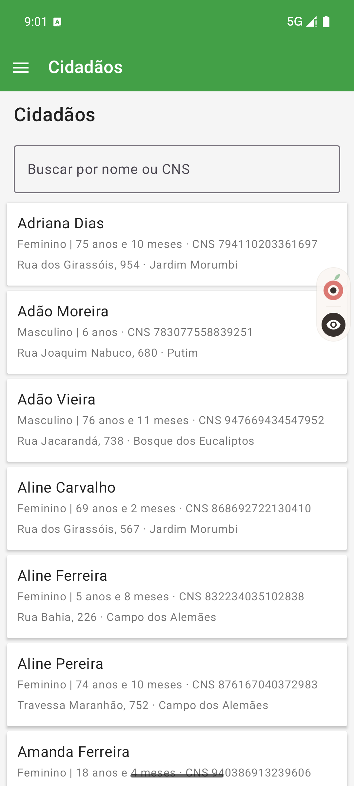
A pílula do Guaraná (logo e olho) flutuando sobre o e-SUS Território.
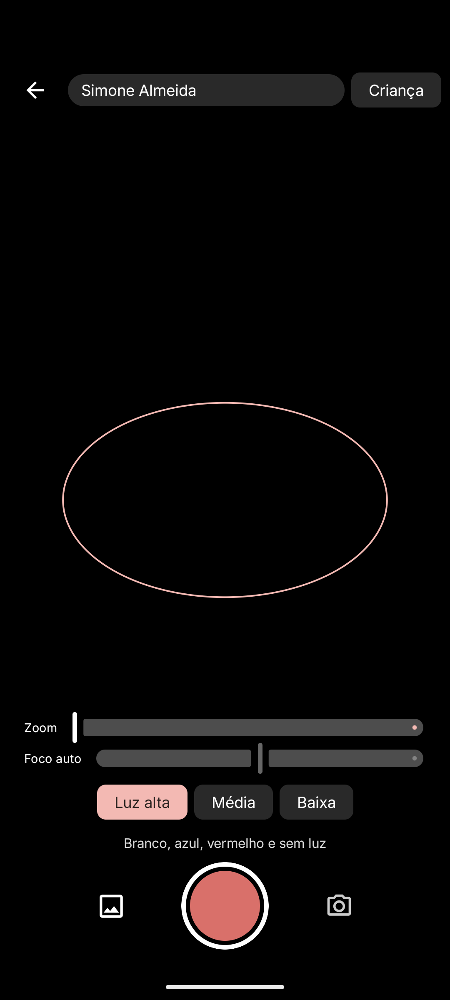
Captura com moldura, zoom, foco e rotina de luz do anel.
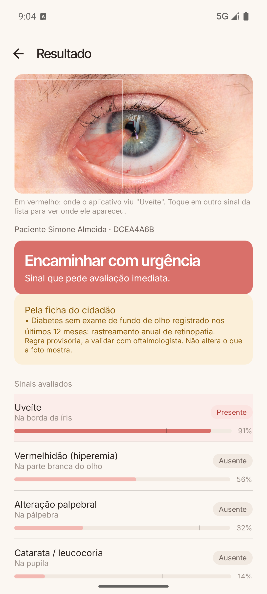
Resultado: faixa de triagem, onde o sinal foi visto e a regra pela ficha do cidadão.
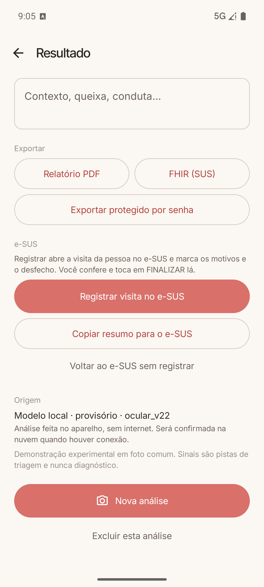
Registrar no e-SUS, copiar resumo, exportar PDF ou FHIR, voltar sem registrar.
Esta captura mostra o modelo antigo (v2.2) errando o pterígio vermelho como uveíte. O modelo novo do banco (Perception Encoder) acerta essa mesma foto com 0,92. Mantivemos a tela como está porque é a que roda hoje no aparelho.
Proposta de valorPara cada pessoa da cadeia
Quem
O que ganha
Como o Guaraná entrega
Pessoa atendida
Doença pega cedo, sem sair de casa nem viajar até um especialista para ser triada.
Foto na visita; encaminhamento só quando precisa.
Agente comunitário
Um "olho de especialista" no bolso, sem mais trabalho.
Pílula dentro do e-SUS; resposta em português simples; registro automático.
Equipe da UBS
Lista priorizada de quem precisa de avaliação, com foto e motivo.
Triagem em 4 faixas; regras pela ficha (diabético sem fundo de olho há 12 meses, hanseníase, deficiência visual).
Gestor municipal e estadual
Mapa real de demanda oftalmológica por território.
Agregação dos resultados por bairro e microárea; base para planejar mutirões e missões.
Oftalmologista
Chega a ele quem realmente precisa, já com foto.
Encaminhamento com imagem e evidência; segunda opinião na nuvem quando houver sinal.
Três escolhas de projeto que sustentam a proposta
Integração limpa e discreta Nada de novo login ou cadastro paralelo. A pílula só aparece quando o e-SUS está aberto, some quando não é usada e o botão voltar devolve ao e-SUS.
Offline por padrão Todos os modelos (enquadramento, segmentação, sinais) rodam no tablet em menos de 1 s. A nuvem é opcional e assíncrona.
Explicável para leigo "Viu vermelhidão na parte branca do olho, à direita. Muito provável (91%)." Os números técnicos ficam atrás de um ícone de expandir.
ProdutoO app hoje
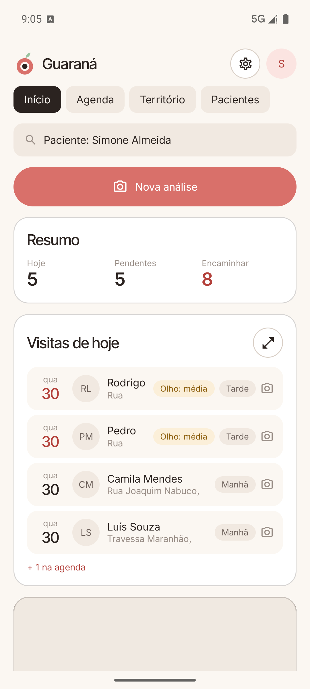
Início: resumo do dia, visitas pendentes e casos a encaminhar.
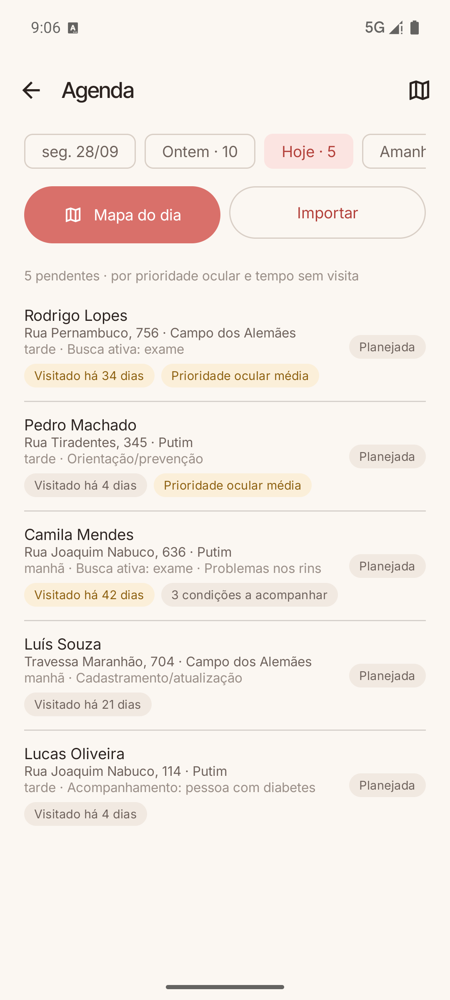
Agenda: visitas ordenadas por prioridade ocular e tempo sem visita.
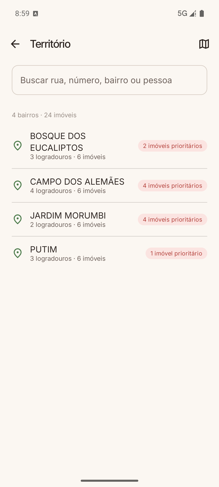
Território: bairros e imóveis prioritários, na hierarquia do e-SUS.
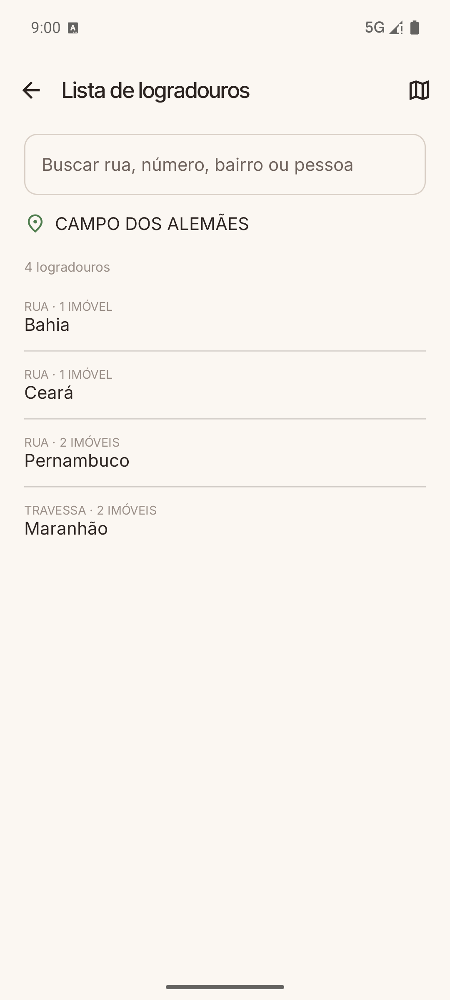
Bairro: logradouros e imóveis, como no e-SUS; mapa da área baixável para uso offline.
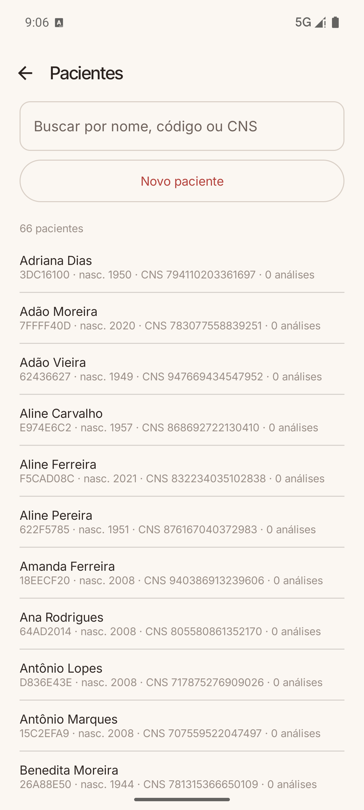
Pacientes: busca por nome, código ou CNS, histórico de análises.
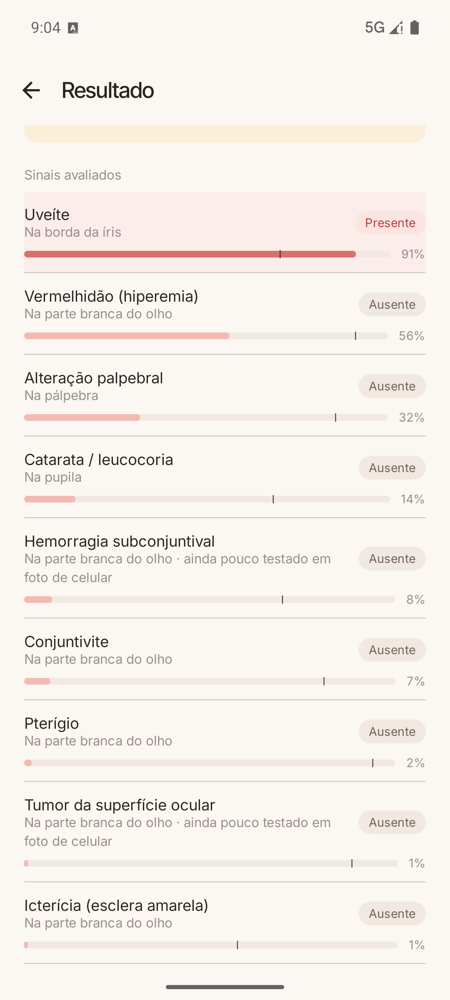
Sinais avaliados: cada sinal com estado, região e confiança.
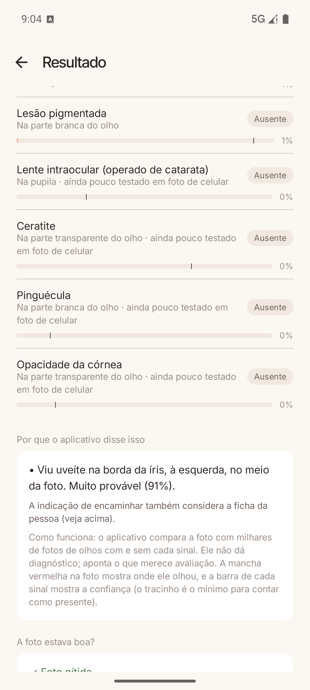
Por que o app disse isso: explicação em linguagem simples; detalhes técnicos sob demanda.
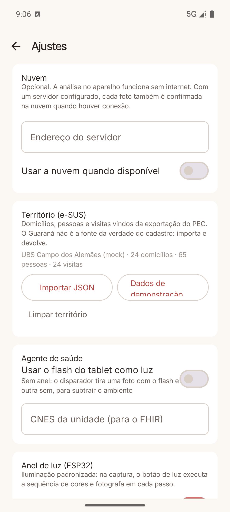
Ajustes: nuvem opcional, território, flash do tablet e anel de luz.
Como funcionaDo pixel à triagem
EnquadramentoDetector próprio recusa foto longe, com dois olhos ou sem olho.
→
QualidadeNitidez, luz e reflexo; troca para o quadro sem flash se houver reflexo.
→
SegmentaçãoFenda e íris (IoU 0,92 / 0,94): onde está a esclera.
→
SinaisClassificador de 15 sinais, várias vistas, mapa de onde viu.
→
TriagemRegras por sinal mais regras pela ficha do cidadão.
Dois ramos que se completam
Ramo B · reconhecimento Rede neural treinada em ~6.500 fotos públicas de 18 fontes, com máscara de rótulos por fonte e simulação de "foto de tela". Reconhece forma e padrão: pterígio, catarata, conjuntivite, lesões, pálpebra.
Ramo A · absorbância de luz Cor medida na esclera: bilirrubina absorve azul, hemoglobina absorve verde. Mesmo em foto comum sem controle de luz já separa icterícia de olho normal com AUROC 0,90 e vermelhidão com 0,88. Com o anel de luz e referência de branco vira medição calibrável.
Régua de avaliação, sem maquiagem
Toda fonte nova é dividida por paciente em metade de treino e metade de teste permanente. O número que importa é a acurácia em fotos de fontes que o modelo nunca viu, com a mesma quantidade de fotos por classe.
Experimento: 4 condições, 300 fotos de treino e 200 de teste por classe
Teste separado
Fotos do Google nunca vistas (média das 4 classes)
MobileNetV3 só com bases públicas (modelo do app até hoje)
89,1%
52%*
MobileNetV3 + fotos da busca de imagens
85,9%
77,6%
Perception Encoder S (Meta, 24M parâmetros, Apache-2.0)
91,2%
92,4%
ConvNeXt-T ImageNet-22k
91,1%
92,1%
EVA-02 S
90,9%
91,7%
VisionFM olho externo (modelo de fundação oftálmico)
90,5%
89,1%
* Medido em 3 classes, antes da coleta de olhos normais. O Perception Encoder roda em 39 ms na CPU do Mac; no tablet ainda será medido. Banco completo de 15 arquiteturas em saida/bench_arquiteturas.md. Limite: só 4 condições têm 500 fotos comuns; as demais (uveíte, icterícia, pálpebra, hemorragia, ceratite) seguem com validação parcial.
FeaturesO que já está pronto e o que vem
Feature
Status
Triagem de 15 sinais do olho externo, offline, com mapa de onde viu
pronto (v2.2; v2.3 com o novo modelo em preparo)
Guia de captura: aproxime, um olho por vez, recusa foto ruim, troca o quadro com reflexo
pronto
Explicação em linguagem simples, números técnicos sob demanda
pronto
Triagem cruzada com a ficha (diabetes sem fundo de olho, hanseníase, deficiência visual, hipertensão)
pronto
Pílula flutuante sobre o e-SUS Território; voltar devolve ao e-SUS
pronto
Território, agenda priorizada e mapa offline na hierarquia do e-SUS
pronto
Exportação em PDF, FHIR (RNDS) e pacote protegido por senha
pronto
Validação automática no aparelho a partir de uma pasta de fotos
pronto
Anel de luz (ESP32) controlado pelo app; índices de cor na esclera
pronto (v0)
Preenchimento automático da Ficha de Visita no e-SUS a partir do resultado
em andamento
Segunda opinião na nuvem com modelos grandes (contrato e cliente prontos, servidor a montar)
em andamento
Planejamento de missões e mutirões a partir do mapa de achados
não implementado
Lente para fundo de olho e controle de cor calibrado
roadmap de hardware
Planejamento de missões (a construir)
Cada triagem é georreferenciada no território do e-SUS. Somadas, viram um mapa de demanda: quantos pterígios cirúrgicos em cada comunidade ribeirinha, quantas cataratas maduras por município, onde há crianças com leucocoria a confirmar. Isso permite dimensionar e roteirizar mutirões de catarata e pterígio, barcos e carretas de saúde, e medir depois se a fila caiu. É a ponte entre a visita do ACS e a decisão do gestor.
HardwareDe um anel de luz a uma lente
O app funciona só com a câmera do tablet. O hardware entra para o que a câmera sozinha não faz: luz controlada e, depois, ver o fundo do olho.
v0 · hojeAnel de LEDs RGB (ESP32) ligado por USB, Bluetooth ou Wi-Fi. O app dispara a sequência branco, azul, vermelho e sem luz, com exposição travada, e mede a cor da esclera com o ambiente subtraído.
v1 · controle de corReferência de branco no quadro e calibração por aparelho. O índice de cor vira absorbância e, com coleta junto a exames de laboratório, estimativa de bilirrubina e hemoglobina.
v2 · lente de segmento anteriorLente macro acoplável com luz coaxial e azul-cobalto: córnea, úlcera, fluoresceína e catarata com detalhe de consultório.
v3 · fundo de olhoAdaptador de retinografia para celular: retinopatia diabética e glaucoma, as maiores causas de cegueira irreversível, que hoje o Guaraná só prioriza pela ficha.
Por que isso importa
As quatro maiores causas de cegueira no Brasil (catarata, erro refrativo, glaucoma, retinopatia diabética) quase não aparecem numa foto do olho externo. A lente é o que leva o Guaraná até elas.
O mesmo app, o mesmo fluxo no e-SUS e o mesmo agente. Cada versão do hardware só acrescenta um modo de captura.
Prova de princípio do ramo de cor com laboratório real: em fotos de recém-nascidos com cartão de cor, o índice calibrado correlaciona com a bilirrubina sérica (Spearman 0,73; AUROC 0,88 para bilirrubina ≥ 12).
ImpactoCapacidade de escala
Por que escala
A rede já existe. O ACS visita todas as famílias do seu território, e o e-SUS Território é o sistema oficial dessa visita. O Guaraná não precisa criar canal nem convencer a pessoa a ir à UBS.
Custo marginal perto de zero. Software no tablet que o agente já tem; o hardware é opcional.
Funciona onde o problema é maior. Offline, pensado para Norte, Nordeste, zona rural e ribeirinhos.
Encaixa nas políticas existentes. Política Nacional de Atenção em Oftalmologia, eliminação do tracoma, estratégia de hanseníase, suplementação de vitamina A e triagem de retinopatia no diabético já preveem ações na atenção primária.
O que muda na ponta
Mais cedo: leucocoria na criança e ceratite na zona rural chegam antes da perda irreversível.
Mais certo: a UBS encaminha quem precisa, com foto, em vez de por queixa.
Mais visível: o gestor passa a ver demanda oftalmológica por território, a base para planejar mutirões e medir fila.
Mais justo: o acesso deixa de depender de morar perto de um oftalmologista.
O que ainda precisamos provar
Validação clínica prospectiva com oftalmologista, em campo, com ACS reais.
Desempenho acima de 90% nas condições com poucos dados públicos (uveíte, icterícia, pálpebra, hemorragia, ceratite).
Integração oficial com o e-SUS (hoje demonstrada num simulador fiel às telas reais) e caminho regulatório (ANVISA, LGPD).
Guaraná é ferramenta de triagem e apoio à decisão. Não faz diagnóstico e não substitui o oftalmologista.